Spring 2026
Brand Identity, Packaging
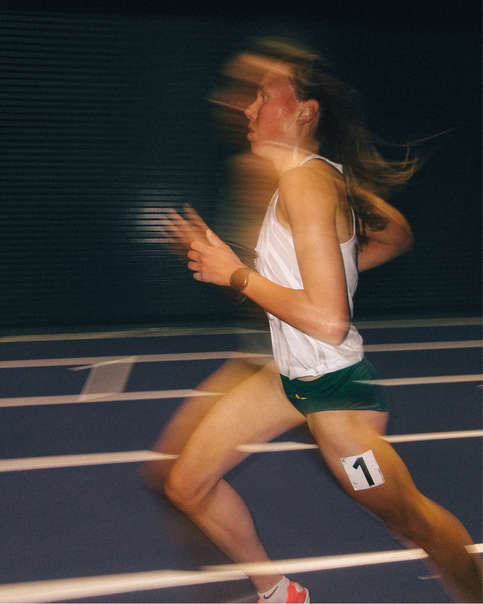
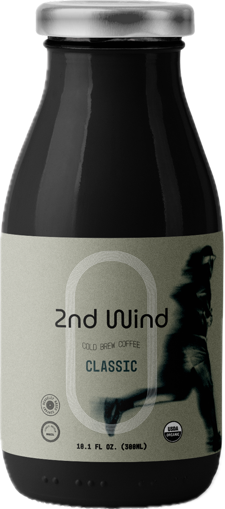
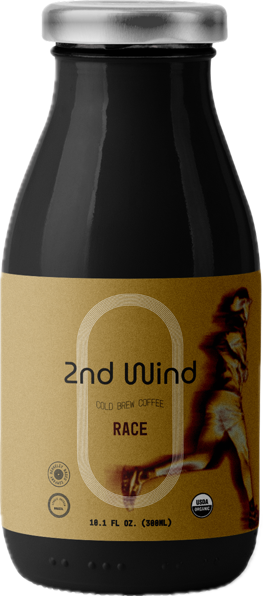
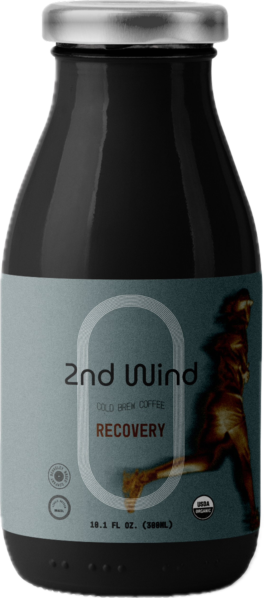
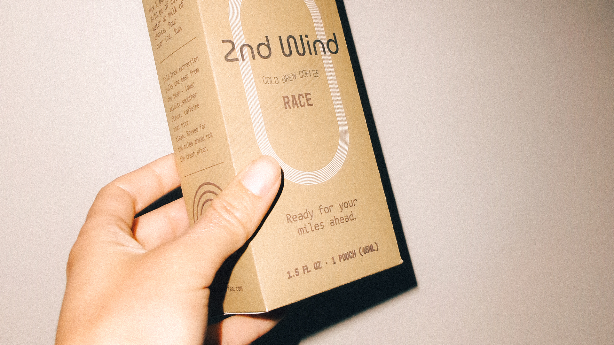
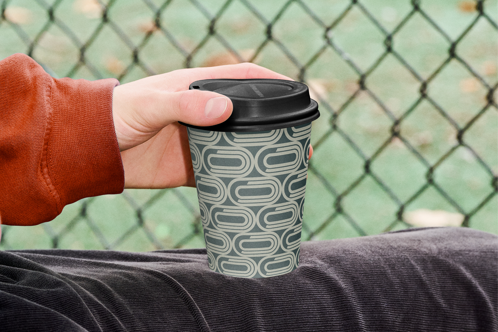
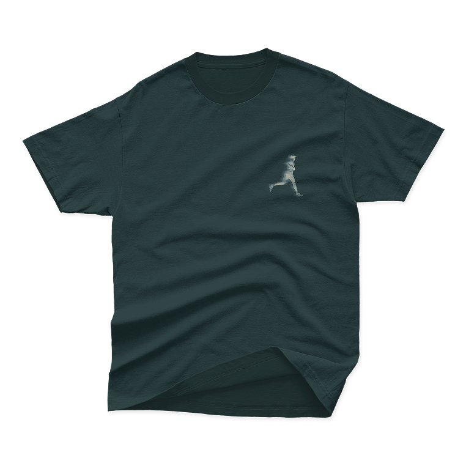
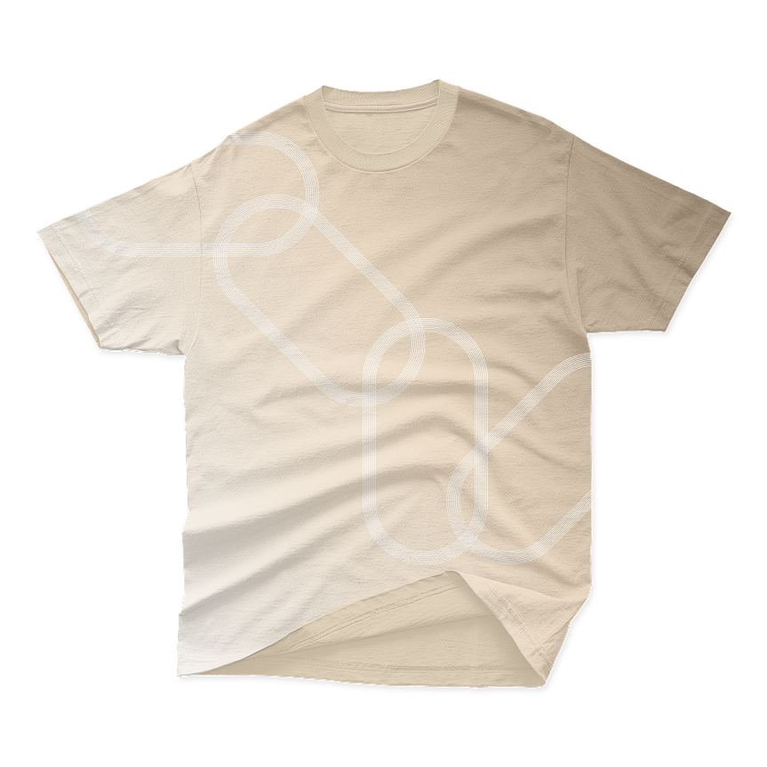
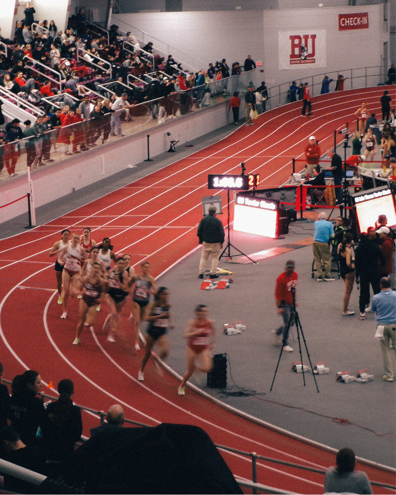
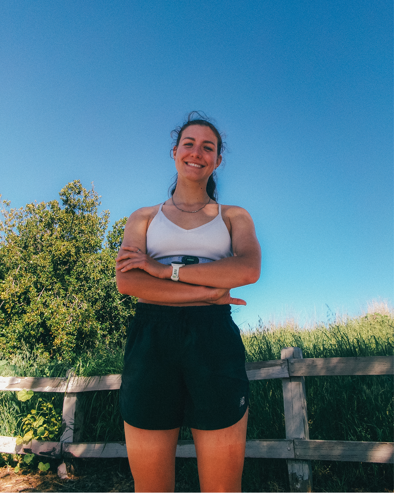
2nd Wind is a brand of organic cold brew coffee, made for runners who chase morning miles before the rest of the city is awake. The audience, "The Early Miler," logs splits on Strava, joins weekend run clubs, and is drawn to performance-led product design, minimal aesthetics, and the small rituals that bookend a training session. 2nd Wind is positioned as the only cold brew built around running itself: low acid, high caffeine, brewed overnight, sized for one bottle before or after a run. The tone of voice sits at the intersection of three attributes: bold, honest, and quietly utilitarian.
The identity is built around a "Running Track" idea: every mark in the system traces back to the oval geometry of a 400-metre track, from the stacked lanes of the symbol to the rounded letterforms of the wordmark. The wordmark uses the numeral "2" instead of spelling out "second" so the mark stays compact and distinct, and a separate track symbol with concentric lanes sits in a stacked oval, like a top-down view of a stadium, for moments where the full wordmark won't fit.
Typography pairs Mono45 Headline, a condensed monospaced display face, with B612 Mono, originally drawn for in-flight displays, across Bold and Regular weights. The palette is grounded and athletic, anchored by Asphalt Black and Chalk White, with Sand, Ember, and Steel Blue accents that map directly onto the three product variants.
Three bottle variants share a single structural label: matte glass, screen-printed graphics, foil cap. Classic, Race, and Recovery each get their own accent colour and ingredient story, so the line reads as a family without losing each variant's identity.
The system stretches into apparel, takeaway coffee cups, race-day pouches, editorial photography, and a black-led website, with the wordmark anchoring the homepage and the track symbol carrying the navigation.